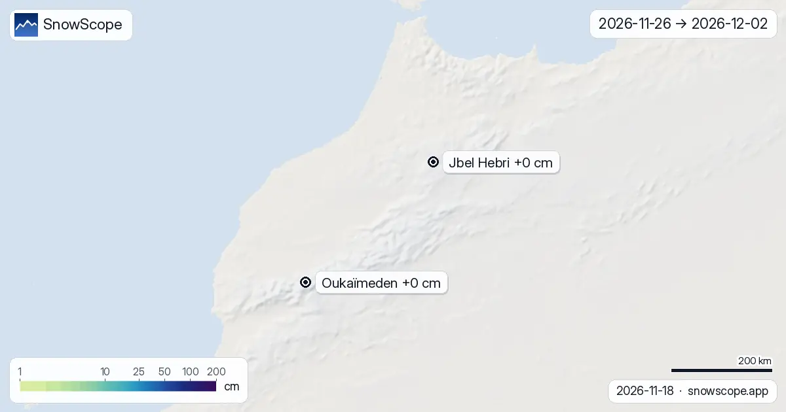

Snow forecast: both resorts dry for two weeks ahead
The Atlas mountains face a prolonged dry spell. Neither Jbel Hebri nor Oukaïmeden will receive meaningful snow between now and 2 December, with the entire region expecting at most 1 cm of new snow over the next two weeks.
See the live snow forecast for Jbel Hebri in the SnowScope appSnow depth, powder alerts and the 3D map, free.
A quiet two weeks ahead
Working in these mountains, I see the same pattern each autumn: high pressure builds over the Atlantic and locks out the winter storms. That is what the forecast shows now. Jbel Hebri will stay bare, as will Oukaïmeden's upper terrain above 3000 m. The region as a whole will add at most 1 cm of new snow.
Snow coverage has already declined sharply. On 16 November the Atlas held 20 km² of white ground; by today that has fallen to 10 km², and the forecast keeps it there through 21 November. The trend is downward, not upward.
| Resort | Snow depth | New snow, 72 h | Coming, next days | Top |
|---|---|---|---|---|
| Jbel Hebri | 0 cm | 0 cm | 0 cm | 2,108 m |
| Oukaïmeden | 0 cm | 0 cm | 0 cm | 3,258 m |
No relief at any height
One lesson from decades in the high Atlas is that altitude sometimes wins when lower slopes fail. This is not one of those times. Every height band from 1000 m to 4500 m will see zero new snow arrive. Oukaïmeden's summit at 3258 m, normally a snow magnet when storms do arrive, sits in the same dry window as the base at 2600 m.
High pressure is the culprit. It is steering Atlantic moisture far to the north, leaving North Africa in clear, cool but snowless air. For snow to fall here, that pattern must break. For now, it holds.
What is on the ground right now
Upper slopes at both resorts measure zero depth today. This is not unusual for mid-November in the Atlas, but it leaves no margin. Any thin snow patches that survived from earlier in autumn have gone. The bare rock and scree that frame the ski terrain are fully exposed.
Winter has not yet begun here. The dry start is normal, but the two-week outlook shows no quick change. Early December will reveal whether patience brings reward or whether the dry spell stretches longer.

When snow typically arrives
The Atlas has a clear winter rhythm. December is often dry like now, but January and February bring the season's heaviest snow. Past winters show that once the Atlantic pattern shifts, the mountains respond within days. The highest peaks can go from bare to substantial snow cover in a single storm.
This forecast spans only 14 days. It describes a quiet autumn window, not the shape of winter itself. The dry spell matters for planning, but it does not define the season.
Planning around the drought
If you are thinking of visiting the resorts in the next two weeks, plan for hiking or acclimatization work, not skiing. Scout the terrain on foot, build fitness, and check the forecast again on 1 December. By then, the picture for mid-December will be sharper, and weather patterns may have shifted.
If you are already in the mountains, stay off high terrain where rocks lie close beneath any thin patches of snow. The absence of a base layer makes every slope hazardous underfoot.
Tips for skiers
- Do not travel to Jbel Hebri or Oukaïmeden expecting to ski in the next two weeks. No snow will fall at any height above 1000 m across the region.
- Return to SnowScope on 1 December to see the forecast for mid-December, when the Atlantic pattern may shift and change the outlook.
- If you are on the mountains now, use the dry window to hike, scout gullies and tree lines, and prepare your base. Rocks are exposed; stay low and move carefully.
- Past winters show strong December and January snow arrives when the high-pressure system finally yields. This two-week dry spell is normal for the Atlas; do not abandon the season because of it.
- Check the official avalanche bulletin if you plan any off-piste hiking or mountaineering above 2600 m, as conditions are complex and unstable when snow is thin and intermittent.
About these numbers
Resort snow depths are the deepest snow on the resort's upper slopes on the date shown; they are estimates for an area, not a measurement at one point. Forecasts can change. Always read the official avalanche bulletin before going off-piste.
Cite this report
For research, teaching or the press: the numbers and charts are free to reuse under CC BY 4.0 with this citation.
SnowScope (2026), Snow forecast: both resorts dry for two weeks ahead, https://snowscope.app/blog/en/2026/11/atlas-morocco-2-week-snow-forecast-maps-18-november-2026.html, accessed 2026-11-18
SnowScope (Atlas Labs). (2026, November 18). Snow forecast: both resorts dry for two weeks ahead. SnowScope snow reports. https://snowscope.app/blog/en/2026/11/atlas-morocco-2-week-snow-forecast-maps-18-november-2026.html
BibTeX
@misc{snowscope2026atlasmorocco2weeksnowfor,
author = {{SnowScope (Atlas Labs)}},
title = {Snow forecast: both resorts dry for two weeks ahead},
year = {2026},
month = nov,
howpublished = {\url{https://snowscope.app/blog/en/2026/11/atlas-morocco-2-week-snow-forecast-maps-18-november-2026.html}},
note = {Published 2026-11-18 10:56 UTC; accessed 2026-11-18}
}· CC BY 4.0 · Methods, data and tools →
Jbel Hebri: snow and temperature by height, this winter vs last (tools) →
Follow Jbel Hebri
Free: a message when fresh snow is coming, and the forecast every morning.
More snow reports

Oukaïmeden in mid-December: 16 cm at mid-mountain in a typical winter, 50 cm or more in only 11 % of winters. Date by date, what 46 winters say.

How low the snow came, when it left, and how this winter compares with 2008-09 and the dry years.

At the height of Oukaïmeden our 46-winter record shows 12 % fewer snow days; lower down the signal is lost in huge year-to-year swings. What we know.